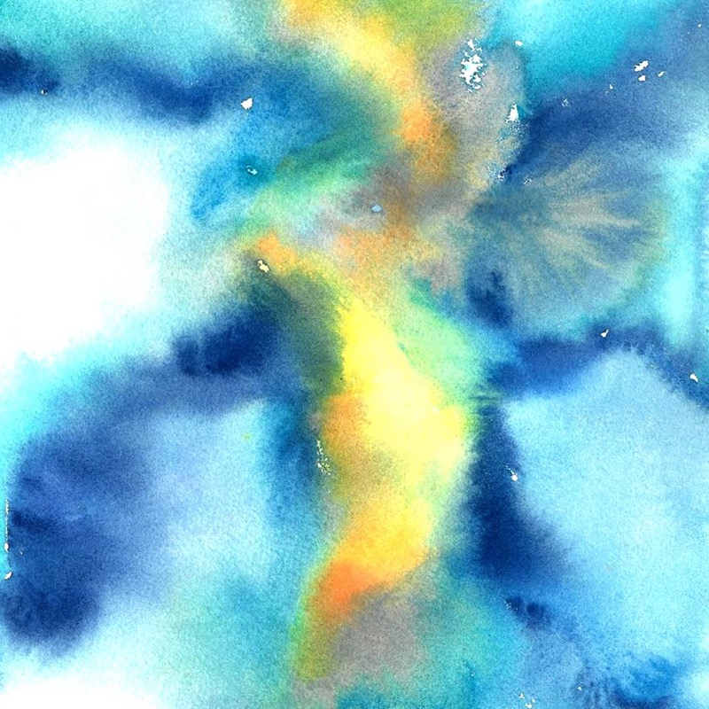

Astra Perdita
Four Piano Vignettes for Those Lost Exploring the Stars
Mark Robert Henderson
Soyuz 1 · Soyuz 11 · Challenger · Columbia

Four Piano Vignettes for Those Lost Exploring the Stars
Mark Robert Henderson
Soyuz 1 · Soyuz 11 · Challenger · Columbia